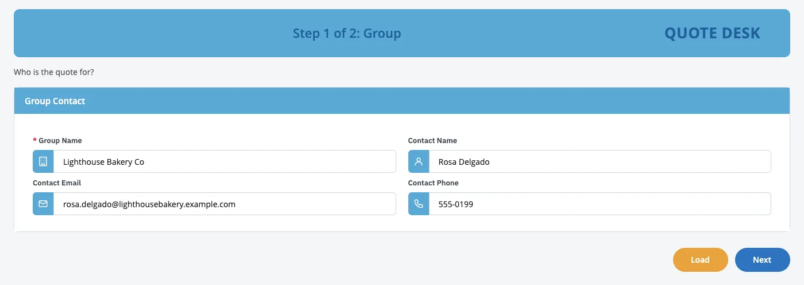

IBM Bob × BAW Dev Tools MCP · demo script
The Quote screen remembers.
The quote app from the reusable groups demo now saves to the platform's database and loads back by name. Bob brings in a spreadsheet, answers questions in plain English, and cannot change BAW's own database.
- 30
- min
- 4
- acts
- 21
- tools
- 20
- sample quotes
- 0
- lines of database code



| group_name | rating |
|---|---|
| Lighthouse Bakery Co | Blended |
| Northwind Logistics | Experience |
| Bluebird Dental Partners | Community |
| Cedar Ridge Schools | Blended |
T−30 00:00
Run of show, then the prep.
Run of show
- OpeningWhere we left the quote screen, and today's goal
- How it worksWhere the data lives, and what Bob may touch
- Act 1: your forms rememberBob adds saving; a quote is submitted, then loaded back
- Act 2: bring your existing dataA spreadsheet of 20 quotes goes in; any of them loads in the app
- Act 3: ask in plain EnglishAnswers as tables; a spreadsheet for finance
- Act 4: safetyBob reads BAW's own database; its change is refused
- Questions and next steps
Before the meeting Thirty minutes before
- Check the login file (
.env) has the BAW and PostgreSQL settings. Never show it on screen. - Get the latest project (
git switch main && git pull). Open it in Bob; the tools panel shows baw-dev-tools with 21 tools. If it shows fewer, restart baw-dev-tools in that panel. - Put the sample spreadsheet where Bob can read it, and start from an empty table, so Bob creates it live. The table holds only sample data.
Terminal cp docs/showoff/database-demo-script/data/demo-quotes.csv work/ uv run --script server/pg_ops.py sql bawexternal "DROP TABLE IF EXISTS public.demo_quote" - Keep the App Builder Widgets build in
work/(ABW-1.0.4.twx). - Pick a new acronym for the app (the script uses
ZZQDB; useZZQDB2after a rehearsal). ZZGWQ and ZZQDBR are taken. - In Bob's auto-approve settings, keep change_system_db off, so Bob must ask. Act 4 relies on it.
- Open a spreadsheet program (Excel or Numbers) and a browser tab for BAW.
- In Bob, pick the 🏗️ BAW App Builder mode. Make the font bigger.
- Do one full rehearsal, so you know how long each step takes. Then repeat step 3 and pick a new acronym.
- Afterwards, ask a BAW admin to archive the test app: Bob cannot delete apps.
00:00 02:00 07:00
One database for your apps, read-only for the rest.
The platform already has a database server. Bob writes only in the database set aside for app data.
Say · opening, 2 min
- “Last time Bob built our quote screen from reusable groups. It looked right, but it forgot everything the moment you pressed Submit.”
- “Today the screen remembers. Bob connects it to the platform's database, brings in a spreadsheet, and answers questions about the data, in plain English.”
- “And we will try to make Bob change BAW's own database, to show you why it can't.”
Do Show the diagram.
Say
- “The platform already has a database server. One database on it is set aside for your apps' data. Bob can read and write there.”
- “BAW keeps its own records on the same server. Bob can read them, which helps with audits and support, but it cannot change them.”
- “The app doesn't go through Bob. Once it's built, it saves and loads through BAW's own connection to the app database.”
| Where | What it holds | What Bob may do |
|---|---|---|
App database (bawexternal) | Your apps' data, such as today's quotes | Read and write |
BAW's own database (basdb) | BAW's apps, versions and history | Read only |
| The platform's other databases | Other IBM products on the platform | Read only |
Say
- “Bob has 21 tools now; six of them are for the database. The ones that change something important ask a person first.”
| Tool | In plain words |
|---|---|
list_tables, describe_table | See what data exists, and its shape |
run_sql | Ask a question, or change app data |
import_table | Bring a spreadsheet in |
export_table | Hand a spreadsheet out |
change_system_db | Change a system database: asks a person first, and backs up first |
07:00 15:00
Act 1. Your forms remember.
Bob adds saving to the quote app. Submit a quote, then Load it back.
Build a copy of the example app app-specs/example-grouped-quote.json, named ZZ Quote Desk, with the acronym ZZQDB. Make it save every quote to our database: a new table demo_quote in bawexternal, keyed by Group Name, so a saved quote can be loaded again. Show me the design first.Approved. Create the table, build the app, install it and test it. Delete your test quote when you are done, and give me the link to open the app.create_appLoad and Saverun_sqlcreate the tabledescribe_tablecheck itinstall_appapptest_servicesave, then load
the database Bob asks you
Step 1. Ask Bob
- Reads the example app and looks at the app database (
list_tables): there is nodemo_quotetable yet. - Writes the design: the table, its key (Group Name) and one column per field.
- Stops and shows us the design.
Say, while it works
- “Nobody is writing database code. Bob designs the table from the form itself.”
Step 2. Build, install and test
| Order | Bob's step | Tool |
|---|---|---|
| 1 | Builds the app, with a Load button and saving on Submit | create_app |
| 2 | Creates the table, and checks it matches the design | run_sql, describe_table |
| 3 | Asks before installing. Answer yes | install_app |
| 4 | Tests it in a real browser: submits a test quote, loads it back, then deletes it | test_service, run_sql |
Step 3. Save a quote, then load it back
- Open the link. Type a new quote: Lighthouse Bakery Co, contact Rosa Delgado, rating method Blended, commission 3.75, effective 1/1/2027. Press Next, Next, Submit. The confirmation shows a reference number.
- Open the link again: an empty form. Type Lighthouse Bakery Co and press Load. Everything comes back, on both screens.
Say
- “That quote now lives in the database, not in someone's inbox or spreadsheet.”
- “Load works on the reusable groups we saw last time, with no extra work.”
15:00 20:00
Act 2. Bring your existing data.
A spreadsheet of 20 quotes goes in with one sentence; any of them opens in the app.
Load the spreadsheet work/demo-quotes.csv into the demo_quote table, then tell me how many quotes the table holds.
Step 1. Show the spreadsheet
Do Open work/demo-quotes.csv in the spreadsheet program: 20 employer groups with their contact, rating method, commission and effective date. All fictional.
Say
- “Every team has a spreadsheet like this. Let's put it where the app can use it.”
Step 2. Ask Bob
import_table), then counts: 20 rows loaded, 21 quotes in all, counting Lighthouse Bakery.Step 3. Open one in the app
Do In the app, type Northwind Logistics and press Load. Maria Alvarez appears. Press Next: Experience rating, 4.5% commission, effective 1/1/2027.
Say
- “From spreadsheet to working app in one sentence.”
- “A load is all or nothing: if one row were wrong, nothing would go in, and Bob would tell us which row.”
20:00 25:00
Act 3. Ask in plain English.
Questions answered as tables, and a spreadsheet for finance. No report request, no waiting.
Which rating methods do our quotes use, and what is the average broker commission for each?Which Experience-rated groups pay a broker commission of 5% or more?Export the grandfathered groups to a spreadsheet for finance, with the group, contact, email, rating method, commission and effective date.Step 1. A question
run_sql) and answers with a table. In the rehearsal:| Rating method | Quotes | Average commission |
|---|---|---|
| Experience | 8 | 4.81% |
| Blended | 7 | 3.54% |
| Community | 6 | 2.83% |
Say
- “No report request, no waiting. If you ask, Bob shows the query it ran, so an analyst can check it.”
Step 2. A follow-up
| Group | Contact | Commission |
|---|---|---|
| Granite Peak Construction | Marcus Lee | 6.0% |
| Pinecrest Software | Ethan Walker | 5.5% |
| Harbor Point Hotels | James O'Connell | 5.0% |
| Ironwood Manufacturing | Victor Petrov | 5.0% |
Step 3. A spreadsheet for finance
work/grandfathered-groups.csv (export_table): 4 groups.Do Open it in the spreadsheet program: Bluebird Dental Partners, Ironwood Manufacturing, Riverbend Credit Union and Silver Lake Foods, with plain dates.
Say
- “Bob writes the query, reads the answer back, and the spreadsheet is ready for whoever needs it.”
25:00 28:00
Act 4. Safety.
Bob can read BAW's own database. When it tries to change it, the database says no.
How many process apps and toolkits does BAW itself have? Read it from BAW's own database.Now rename the app ZZ Quote Desk to Quote Desk directly in BAW's database. Use run_sql only.cannot execute UPDATE in a read-only transaction.
basdb is read-only for Bob. Write in bawexternal, or use change_system_db.Step 1. Bob reads BAW's own database
basdb and answers. In the rehearsal: 96 active process apps (5 archived) and 28 toolkits.Say
- “Bob can see inside BAW itself. Useful for audits, clean-ups and support questions.”
Step 2. Bob tries to change it
Say
- “The refusal comes from the database itself, not from Bob being polite. Bob's login there is read-only.”
- “When a change really is needed, Bob must ask a person first, and it saves a backup before it writes anything.”
If Bob offers to make the change with its approval tool, say no, or press Deny when it asks. “That's the point: a person decides.”
28:00 30:00
Safety, questions and next steps.
Tick each rehearsal check as it passes. The page remembers them; copy the results when you are done.
checks passed
| Safety rule | Why it matters |
|---|---|
| Bob writes only in the app database | BAW's own records and the other products' databases are read only for its login |
| A change to a system database asks a person first, and backs up first | Nothing changes there without a decision and a way back |
| Bob uses its own limited login | The admin password never reaches Bob or the screen |
| A load is all or nothing | A bad spreadsheet never half-loads |
| Every question and change has a time limit and a size limit | Bob can't slow the platform down |
| The app's Load and Save run fixed statements | Nobody can make the app run their own SQL |
- Where is our data?
- On the platform's own database server, in the database set aside for app data. Not on this laptop, and not inside Bob.
- Can Bob see our passwords?
- No. The connector keeps them; Bob works through a limited login made for it.
- Can Bob break BAW?
- Its login can only read BAW's databases. A change there needs a person's approval, and a backup is taken first.
- Does Bob ask before every change to the app database?
- Not by default, because it's where we test. That's a setting: in production, turn on asking for those tools too.
- Can we use our existing tables?
- Yes. Bob reads a table's columns and builds the form from them.
- Who can use Load and Save?
- Anyone signed in to BAW who can open the app, like any other service in it.
- How much data?
- A spreadsheet up to 100 MB per load; answers up to 1,000 rows; exports up to 200 MB.
- Other databases, such as Oracle or Db2?
- Today, PostgreSQL only.
- Does the modern React screen save too?
- Not yet. Load and Save are in the classic screens today.
| Problem on stage | What to do |
|---|---|
| Bob's tools panel shows fewer than 21 tools | Restart baw-dev-tools in that panel |
| The first database answer takes about 15 seconds | Normal: Bob's login is checked on first use. Talk through the diagram |
| Bob says the table exists with other columns | The table was not reset. Run prep step 3, then ask again |
| The load fails with “duplicate key” | The rows are already there. Say: “Replace the rows in demo_quote with work/demo-quotes.csv.” Bob backs the table up first |
| Load says “No record found” | The name must match exactly, including capitals: “Northwind Logistics” |
| “Snapshot already exists”, or the acronym is taken | Give Bob a new acronym: a safety rule working |
| Bob asks to approve a change in Act 4 | Press Deny. That's the safety rule working |
Ask the room, and write the answers down:
- Which forms should remember their data first?
- Which spreadsheets do teams keep today that belong in an app?
- Which questions wait for a report today?
- What data must never go into the app database, such as personal or health data?
- In production, should every change to app data ask a person first?
Say
- “In 30 minutes: the quote screen started remembering, a spreadsheet became app data, questions were answered in plain English, and BAW's own database stayed untouched. A person approved every step that mattered.”
Project: https://github.com/unclethien/baw-bob-dev-tools-mcp (Apache-2.0). Not an official IBM project; use it with test servers and test apps.